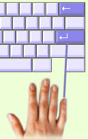

Les exercices sur les paragraphes sont un peu plus difficiles. Le programme ne vous arrêtera plus si vous commettez une erreur. Il vous laisse continuer même si vous avez commis une faute. Ainsi c'est à vous de noter vos erreurs dans votre dactylographie.

Vous n'êtes pas autorisés à revenir en arrière dans le texte pour corriger toutes vos erreurs parce que nous voulons que vous vous concentriez sur votre précision. De plus, apprendre en corrigeant à l'aide de Effacer peut vous empêcher d'atteindre votre meilleur niveau.
Entrée: Dans cet exercice, vous allez aussi commencer à utiliser la touche Entrée, indiqué par le symbole . Utilisez toujours votre auriculaire droit pour taper Entrée.